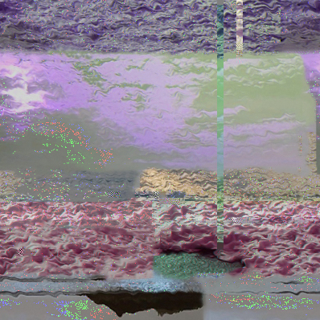
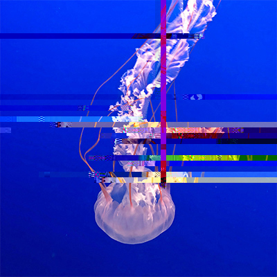
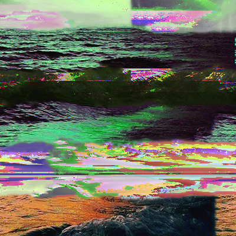

I compiled photographs that I took of the beach and ocean life and distorted them with glitches. The glitches within the piece represent the pollution and damage that have been done to our ocean life. The news I heard of coral reefs dying and pollution increasing in the ocean inspired me to create this piece to spread awareness about the situation.
  This video was my first time using Touchdesigner to create a glitched video. The original video is a montage of clips from my trip to to new York city. I knew the various colors and different video clips from the montage would create great glitch affects when distorted to create an entirely new piece.